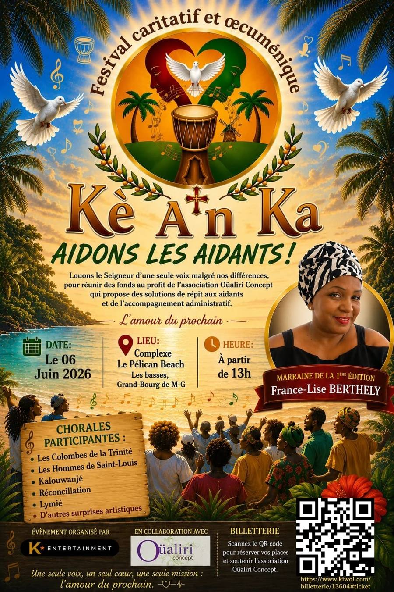
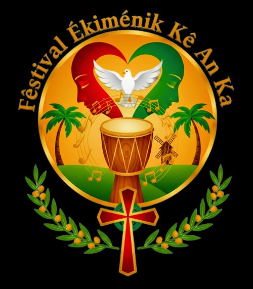
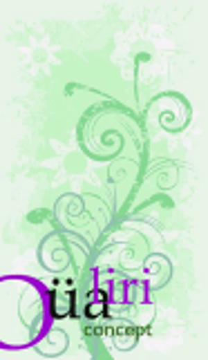

Projet solidaire
Festival Ékiménik Kè An Ka
« Aidons les aidants ! » — produit par K Entertainment, en collaboration avec Oüaliri Concept.
Louons le Seigneur d'une seule voix malgré nos différences
Un festival caritatif et œcuménique produit par K Entertainment, en collaboration avec l'association Oüaliri Concept, pour réunir des fonds au profit de solutions de répit et d'accompagnement administratif pour les aidants.

Affiche officielle — édition 2026
Logo du festivalPourquoi ce festival
Offrir du répit aux aidants
En 2025, 8 à 11 millions de personnes en France déclarent apporter une aide régulière à un proche en situation de handicap ou de perte d'autonomie. La Guadeloupe fait partie des départements les plus concernés. Une journée de répit coûte en moyenne 500 €, rarement prise en charge dans son intégralité.
L'intégralité des bénéfices du festival soutient Oüaliri Concept, association loi 1901 dédiée à l'accompagnement, au répit et au bien-être des aidants de personnes en situation de handicap ou de dépendance.

Association loi 1901 au rayonnement départemental, engagée pour la solidarité, le respect, la générosité et l'insertion sociale, à travers l'accompagnement des aidants et sa section bien-être « Oüaliri Wellness ».